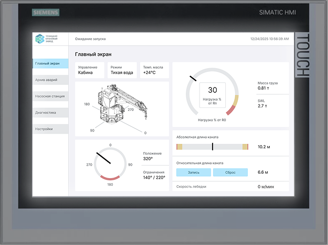
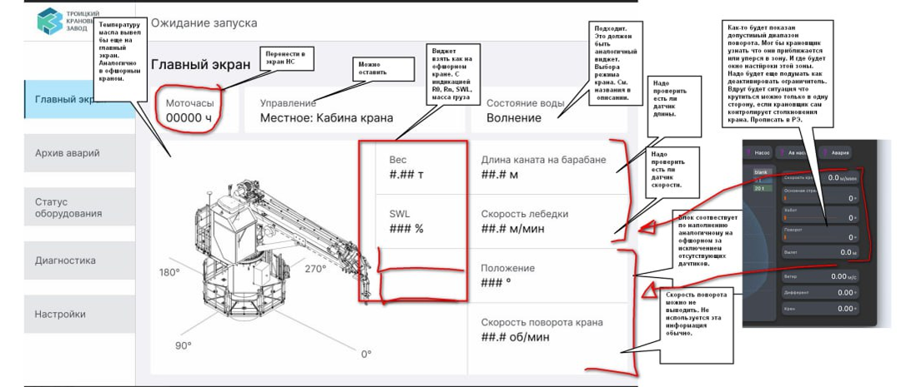
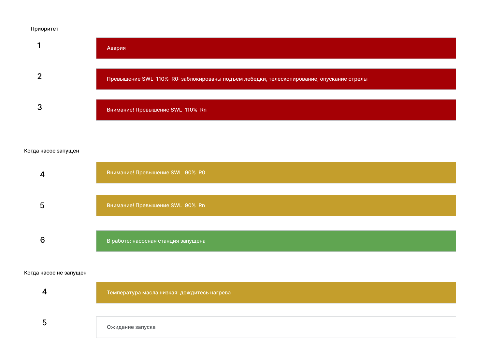
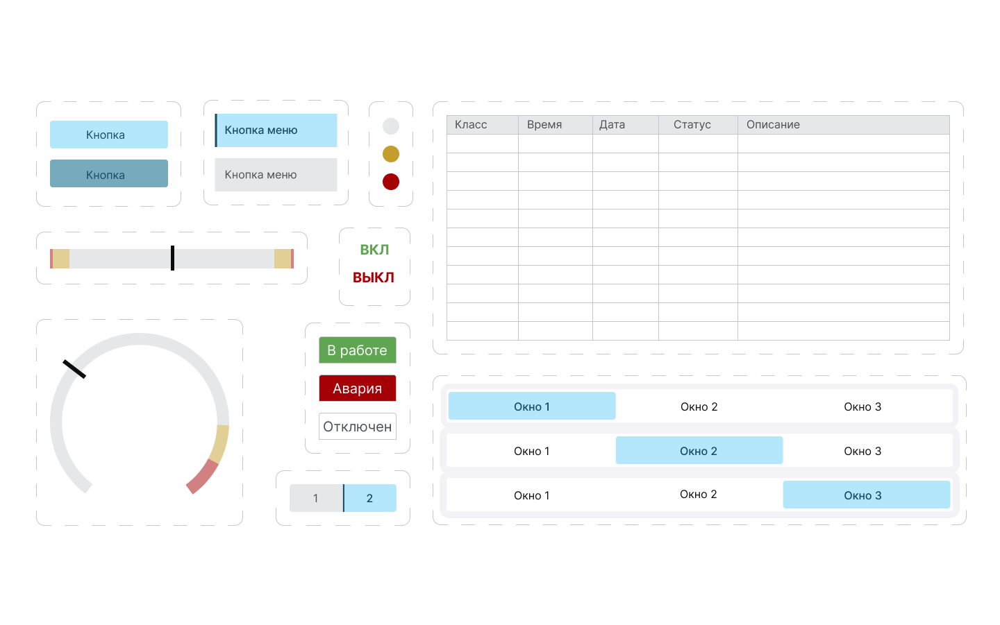
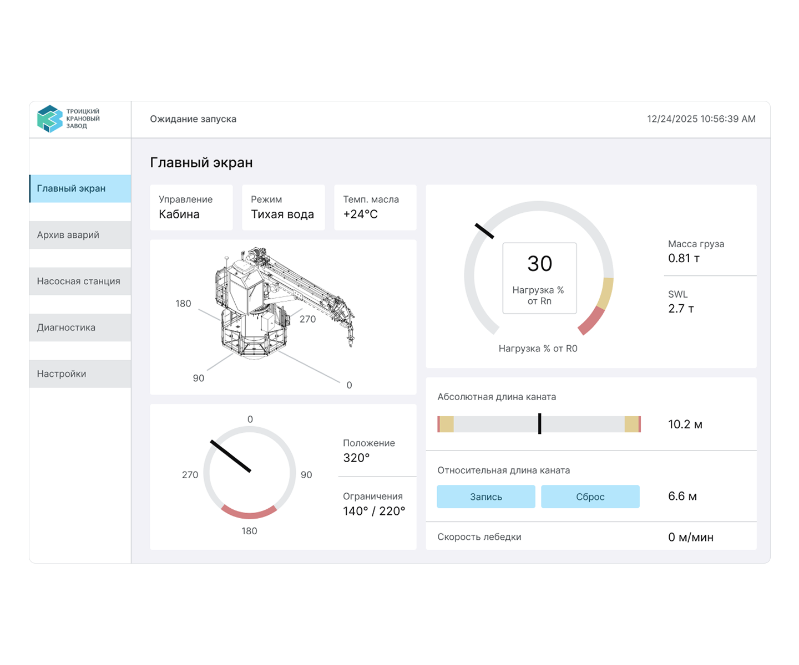
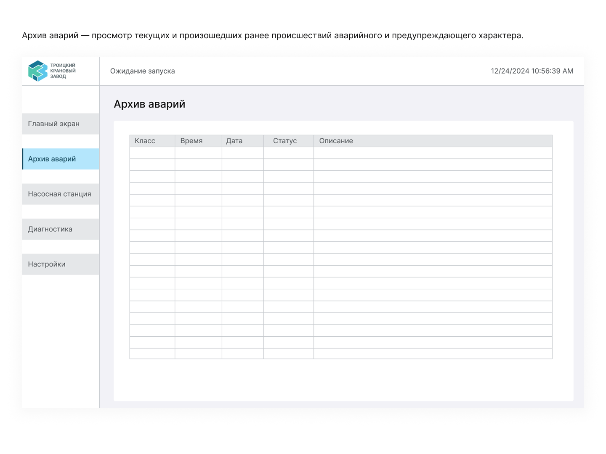
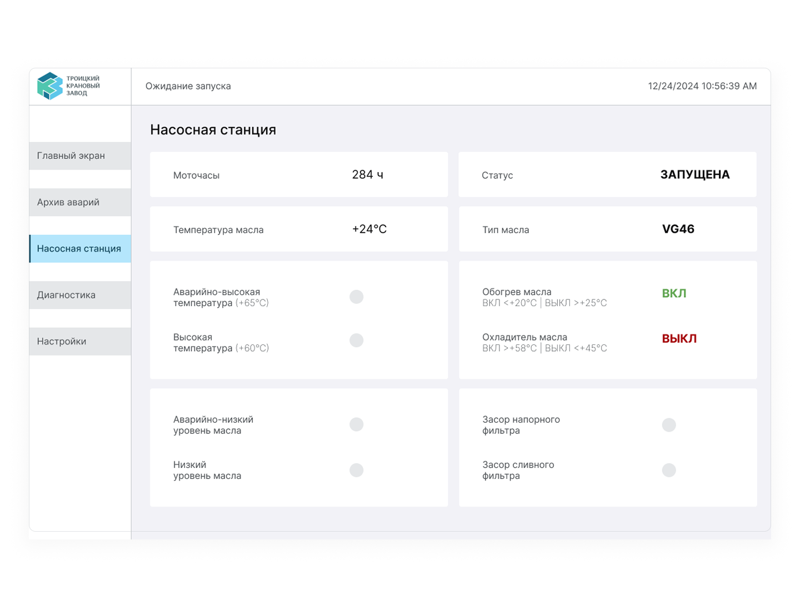
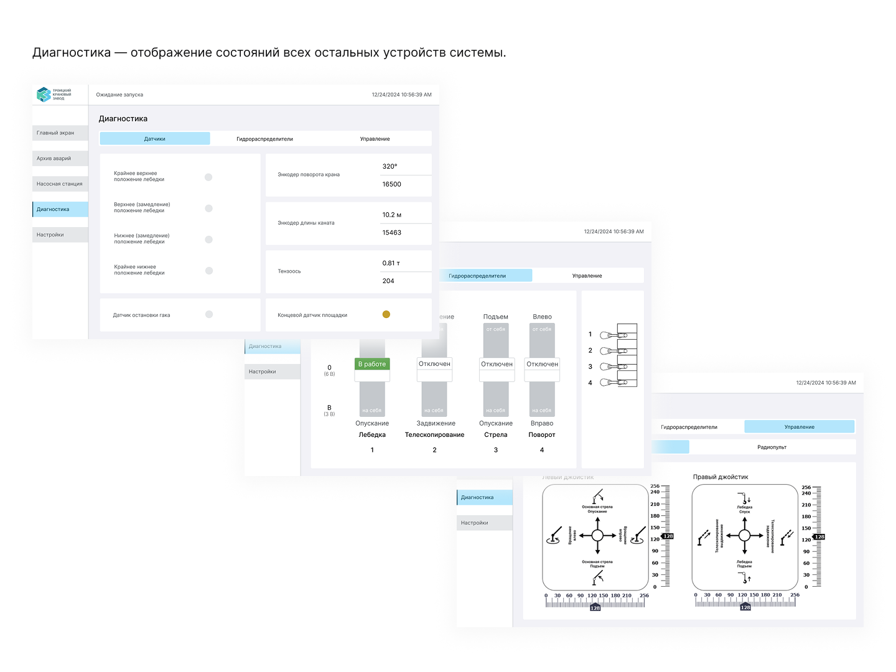
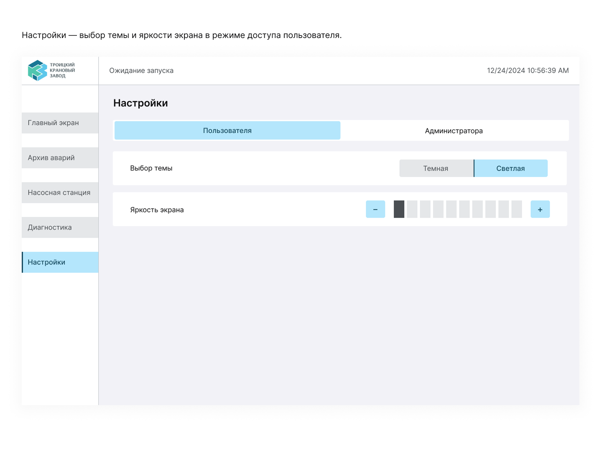

Интерфейс для HMI панели крана-манипулятора

Проблема: Промышленный интерфейс имеет большое значение для безопасности людей. Оператор в аварийной ситуации должен быстро оценить все важные параметры и предпринять правильные действия по устранению неисправности, иначе может случиться травма или поломка оборудования.
Задача: Сделать интерфейс безопасным и понятным для операторов, работающих в стрессовых условиях.
Ключевые требования
- Вся критическая информация — на главном экране
- Мгновенное оповещение об авариях (без необходимости переключаться по экранам)
- Управление сенсорным экраном в перчатках (крупные кнопки)
- Минимализм и чёткая структура
Процесс и проектные решения
У меня не было возможности провести полноценные интервью с операторами. Я сделала то, что было в моих силах:
- Обсудила с руководителем проекта его виденье интерфейса, какие параметры важно расположить на главном экране, а какие лучше убрать. За весь процесс создания произошло несколько итераций.
- Изучила похожие проекты от других производителей
- Ставила себя на место оператора: проходила по алгоритму его действий

Структура экранов и навигация
Я спроектировала навигацию с нуля. В системе 5 основных экранов, все доступны из бокового меню. Оператор видит, на каком экране находится, и может переключиться на любой другой в один клик.
Глобальная строка уведомлений
Вместо всплывающих окон — строка уведомлений, которая видна на всех экранах. Если возникает ошибка, оператор видит её сразу, даже если он находится в меню настроек.

Адаптация под сенсорное управление
Все активные зоны — крупные (кнопки 170×48). Я продумала, чтобы оператор в перчатках мог попасть пальцем в нужную область, не задевая соседние. Активные элементы выделены голубым цветом.
Палитра
Я создала 2 темы: светлую и тёмную. Оператор может выбрать ту, которая удобнее в зависимости от времени суток и освещения.
UI-Kit
Был составлен UI-Kit с разными состояниями элементов. Так как проект был реализован в HMI от компании Siemens в Tia Portal, то состояний у кнопок 2 — только нажата или не нажата. В данном ПО нет возможности реализовать больше микро-взаимодействий.

Визуал
Главный экран
Этот экран оператор видит в первую очередь. Здесь собраны все параметры, которые критически важны для безопасной работы:
- Нагрузка на кран (R0 и Rn): Круговая диаграмма с чертой показывает значение R0. В центре диаграммы выводится крупно значение Rn. Когда волнения нет R0=Rn, значения совпадают. Когда есть волнение, значение Rn выше, чем R0. Например, абсолютная разрешенная нагрузка (R0) равна 70%, в то же время, если волнение сильное нагрузка Rn может быть уже 90% и работать опасно. Оператор видит оба значения (R0 на «спидометре», Rn в числовом формате) и понимает, что с краном все окей, но из-за волнения стоит временно приостановить работы.
- Длина каната: Абсолютная (сколько всего размотано) и относительная (оператор может обнулить точку отсчёта, чтобы видеть, на сколько именно опущен или поднят груз от «нулевой точки»).
- Положение крана: круговая диаграмма, где запретная зона отмечена красным.
- Режимы работы: какие режимы включены, есть ли ограничения.

Архив аварий
Архив аварий — просмотр текущих и произошедших ранее происшествий аварийного и предупреждающего характера. Оператор не просто видит, что случилось. Он может проанализировать, почему это произошло, и предотвратить повторение. Инженеры используют этот экран для диагностики системы после инцидентов.

Насосная станция
За движением крана стоит сложная гидравлическая система. Этот экран показывает состояние каждого её элемента в реальном времени.

Диагностика
Здесь отображаются состояния всех остальных устройств системы.

Настройки
Оператор работает с панелью часами, у него должна быть возможность настроить интерфейс под себя.
- Тема: светлая и тёмная. В тёмное время суток или при плохой освещённости оператор может переключиться на тёмную тему, чтобы не напрягать глаза.
- Яркость: плавная регулировка для разных условий освещения (от солнечного света до тусклого освещения кабины).

Результаты
Проект не был запущен на момент моего ухода, я передала реализованный интерфейс команде. По моей оценке, спроектированный интерфейс позволяет оператору:
- Сократить время поиска критической ошибки с нескольких секунд до мгновенного считывания (глобальная строка уведомлений + цветовое кодирование)
- Быстро оценивать два типа нагрузки (абсолютную и с учётом волнения) — это критически важно для безопасности в море
- Управлять краном в перчатках без ошибок